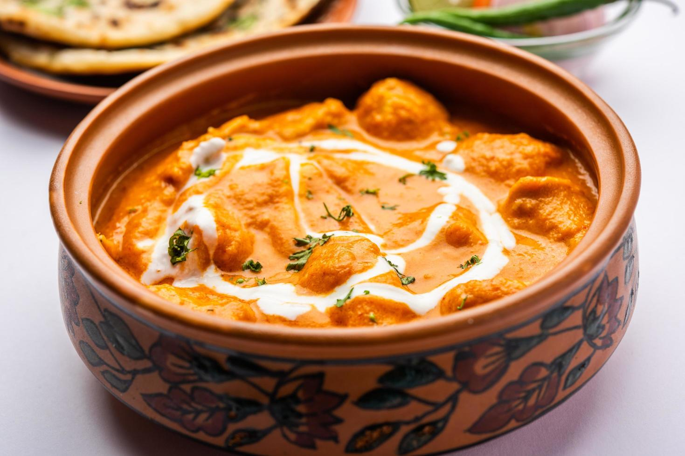

Home
Butter Chicken

Butter Chicken, also known as Murgh Makhani, is a rich and creamy tomato-based curry that’s beloved worldwide.
Paired with soft, buttery Garlic Naan, this dish brings the flavors of North India right into your kitchen.
Whether you're cooking for family or hosting guests, this recipe is a guaranteed crowd-pleaser."
Ingredients
- 500g boneless chicken (preferably thigh)
- 1 cup plain yogurt
- 2 tsp ginger-garlic paste
- 1 tsp turmeric
- 1 tsp chili powder
- Salt to taste
- 2 tbsp butter
- 1 cup tomato puree
- 1/2 cup fresh cream
- 1 tsp garam masala
- Fresh coriander for garnish
Steps to follow
- Marinate the chicken with yogurt, spices, and ginger-garlic paste for at least 1 hour
- Cook the chicken in a pan until browned
- In another pan, melt butter and cook the tomato puree until reduced
- Add cream, garam masala, and cooked chicken
- Simmer for 10–15 minutes. Garnish with coriander